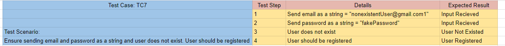

ARVenture Execution V&V (Testing) Phase
Table of contents
- ARVenture Execution V\&V (Testing) Phase
- Table of contents
- Testing tools used
- Software Testing Phases
- Design
- Automation
- Execution
- Evaluation
Testing tools used
- Vitest (For Automated Frontend Functional Testing)
- Lighthouse (For Automated Frontend Nonfunction Testing)
- Postman (For Manual Backend Functional Testing)
Software Testing Phases
Design
In this phase we will design test cases.
1. Human Based
- Test AR Adventure Experience
2. Criteria Based
Test Criterion (Rules)
- Test Basic Working Functionalities
- Test Essential Working Functionalities
Test Requirements
- Test Register funcionalities (DONE).
- Test Login funcionalities (DONE).
- Test Items functionalities (NOT IMPLEMENTED).
- Test Home UI Components (NOT IMPLEMENTED).
- Test Create Tool UI Components (NOT IMPLEMENTED).
- Test Search Tools UI Components (NOT IMPLEMENTED).
- Test Product UI Components (NOT IMPLEMENTED).
- Test About Us UI Components (NOT IMPLEMENTED).
- Other Test Requirements is assigned as "LATER".
Coverage Criteria
- For ISP Coverage: We will choose BCC (Base Choice) Coverage Criteria, since we want to ensure minimal test cases with maximum benifit.
- For Graph Coverage: We will choose CPC (Complete Path) Coverage Criteria, since we plan to use it in integration between frontend and backend.
- For Logic Coverage: We will choose PC (Predicate) Coverage Criteria, since we only want to use it in validation statements.
- For Syntantic Coverage: We will choose to use this coverage in HTML and CSS Components.
Functional
-
Unit Testing Test Set (TS1): Using Input Domain Coverage

-
(TC1): Ensure Email and Password are Valid, and the Button is clicked
- (TC2): Ensure Email is invalid and Password is Valid, and the Button is clicked
- (TC3): Ensure Email is empty and Password is Valid, and the Button is clicked
- (TC4): Ensure Email is valid and Password is invalid, and the Button is clicked
- (TC5): Ensure Email is valid and Password is empty, and the Button is clicked
-
(TC6): Ensure Email is valid and Password is valid, and the Button is not clicked
-
Integration Testing Test Set (TS2): Using Logic Coverage
-
(TC7): Ensure sending email and password as a string and user does not exist. User should be registered
- (TC8): Ensure sending email and password as not a string and user exists. User should not be registered
- (TC9): Ensure sending email and password as a string and user exists. User should login
- (TC10): Ensure sending email and password as not a string and user does not exist. User should not login
Predicate 1 (P1): Email is a string
Predicate 2 (P2): Password is a string
Predicate 3 (P3): user does not exist
Predicate 4 (P4): user already exists
Register True Expression: (P1 or P2) and (P3)
Register False Expression: (not P1 or not P2) and (P4)
Login True Expression: (P1 or P2) and (P4)
Login False Expression: (not P1 or not P2) and (P3)
-
System Testing Test Set (TS3): Using Graph Coverage

-
(TC11): Path(1,2,7)
- (TC12): Path(1,2,3,7)
- (TC13): Path(1,2,3,4,7)
- (TC14): Path(1,2,3,4,5,7)
- (TC15): Path(1,2,3,4,5,6)
Non Functional
- Performance Testing Test Set (TS16): Using Logic Coverage

- Availability Testing Test Set (TSx): Using Logic Coverage
- Security Testing Test Set (TSx): Using Graph Coverage
Test Sets (Test Cases)
TC1 From TS1

TC2 From TS1

TC3 From TS1

TC4 From TS1
TC5 From TS1
TC6 From TS1
TC7 From TS1

TC8 From TS1
TC9 From TS1

TC10 From TS1

Automation
TC1 Automation From TS1
// Test Case 1
test("(TC1) Ensure Email and Password are Valid, and the Button is clicked", async () => {
expect(
await register(
"validUsername",
"valid@example.com",
"validPassword",
"validCountry",
"localhost:9090" // Fake Backend URL (To Unit Test)
)
).toBe("Register Information is Ready To Send");
});
TC2 Automation From TS1
// Test Case 2
test("(TC2) Ensure Email is invalid and Password is Valid, and the Button is clicked", async () => {
expect(
await register(
"validUsername",
"invalidEmail",
"validPassword",
"validCountry"
)
).toBe("Invalid Email (missing '@')");
});
TC3 Automation From TS1
// Test Case 3
test("(TC3) Ensure Email is empty and Password is Valid, and the Button is clicked", async () => {
expect(
await register("validUsername", "", "validPassword", "validCountry")
).toBe("Empty Email");
});
TC4 Automation From TS1
// Test Case 4
test("(TC4) Ensure Email is valid and Password is invalid, and the Button is clicked", async () => {
expect(
await register("validUsername", "valid@example.com", "123", "validCountry")
).toBe("Invalid Password (less than 4 characters)");
});
TC5 Automation From TS1
// Test Case 5
test("(TC5) Ensure Email is valid and Password is empty, and the Button is clicked", async () => {
expect(
await register("validUsername", "valid@example.com", "", "validCountry")
).toBe("Empty Password");
});
TC6 Automation From TS1
// Test Case 6
test("(TC6) Ensure Email is valid and Password is valid, and the Button is not clicked", () => {
return "Nothing will happen";
});
TC7 Automation From TS2
/* Integration Testing */
// Test Case 7
test("(TC7) Ensure sending email and password as a string and user does not exist. User should be registered", async () => {
expect(
await register(
"nonexistentUser",
"nonexistentUser@gmail.com1",
"fakePassword",
"fakeCountry"
)
).toBe("User registration successful");
});
TC8 Automation From TS2
// Test Case 8
test("(TC8) Ensure sending email and password as not a string and user exists. User should not be registered", async () => {
// Assuming there is an existing user with the given details
expect(await register("existingUser", 0, 0, "fakeCountry")).toBe(
"Please Enter String Password"
);
});
TC9 Automation From TS2
// Test Case 9
test("(TC9) Ensure sending email and password as a string and user exists. User should login", async () => {
expect(await login("existingUser", "fakePassword")).not.toBe(undefined); // access token Recieved (that means there is a user and it is logged in)
});
TC10 Automation From TS2
// Test Case 10
test("(TC10) Ensure sending email and password as not a string and user does not exist. User should not login", async () => {
expect(await login(0, 0)).toBe("Please Enter String Password");
});
Execution
Automatic
Frontend
Running Vitest for All TS1 and TS2
Manual
Backend
TC12 Manual Execution From TS3
TC13 Manual Execution From TS3

TC14 Manual Execution From TS3
TC15 Manual Execution From TS3

Evaluation
Frontend Reports